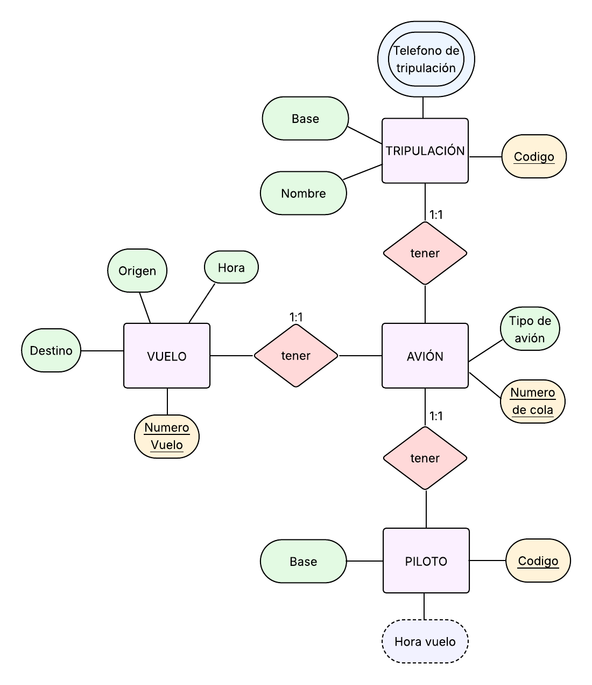
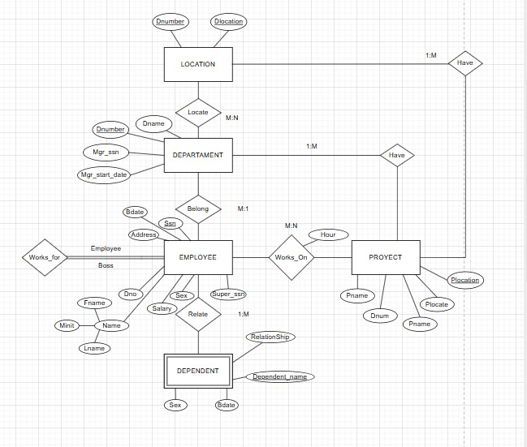

Mis gustos
Música
Mi música favorita es la música pop, un poco el rock en español e inglés y un poco la música mexicana.
Ver canciones favoritasHobbies
Me gusta mucho jugar videojuegos; algunos de mis favoritos son Minecraft, Slime Rancher, Counter-Strike, Valorant y Fornite entre otros.
Estudios
Universidad El Bosque
Actualmente estudio Ingeniería de Sistemas en la Universidad El Bosque en 5 semestre.
Más informaciónActividades trabajadas
Bases1
Modelos ER y ERE
Primer Modelo

Este modelo entidad-relación representa un sistema de vuelos donde se relacionan las entidades VUELO, AVIÓN, PILOTO y TRIPULACIÓN. Cada entidad contiene información importante, como el número de vuelo, tipo de avión, código del piloto y datos de la tripulación.
Ver en LucidChartSegundo Modelo

Este modelo entidad-relación representa un sistema de visualización de contenido donde la entidad principal es USUARIO. El usuario puede ver contenido, realizar búsquedas y revisar un historial de visualización.
Ver en LucidChartTercer Modelo

Este modelo entidad-relación representa un sistema de biblioteca donde las entidades principales son LIBRO y PERSONA. El sistema almacena información de los libros y permite gestionar préstamos.
Actividad de los 7 Modelos
Desarrollo de 7 ejercicios de modelos entidad-relación utilizando la notación Peter Chen. Los ejercicios incluyen diferentes contextos como universidades, hospitales y sistemas de ventas.
Ver actividadActividad documentos 3 y 4
Aplicación del modelo entidad-relación extendido en casos más complejos, utilizando conceptos como herencia, especialización y generalización.
Ver documentoPrimer Taller Grupal – Fase 1
Company
Modelo Relacional Extendido

Este modelo representa un sistema empresarial donde se relacionan empleados, departamentos, proyectos y ubicaciones.
Conversión a tablas

Comidas Rápidas
Modelo Relacional Extendido

Este modelo representa un sistema de pedidos para una pizzería, donde se gestionan clientes, pedidos, repartidores, promociones y artículos.
Conversión a tablas

Residuos Tóxicos
Modelo Relacional Extendido

Este modelo representa un sistema de gestión de residuos donde intervienen empresas productoras y transportistas.
Conversión a tablas

Taller de Normalización
Este trabajo de normalización se enfoca en la organización y optimización de bases de datos mediante la aplicación de las formas normales.

Excel

A través de distintos ejercicios se identifican redundancias y dependencias innecesarias para mejorar la estructura de las tablas.
Ver actividadÁlgebra Relacional
En esta actividad se desarrollaron ejercicios de álgebra relacional aplicando operaciones como selección, proyección, unión, diferencia y joins. Los ejercicios permitieron comprender cómo consultar y manipular información dentro de bases de datos relacionales mediante expresiones formales.
Ejercicios
Proyecto GeoQuest
GeoQuest es un proyecto académico desarrollado como una plataforma interactiva enfocada en el aprendizaje de geografía de manera dinámica y entretenida. El sistema permite a los usuarios poner a prueba sus conocimientos sobre países, capitales, banderas y continentes mediante diferentes modos de juego y preguntas. Además, el proyecto integra bases de datos, modelado relacional y desarrollo web para ofrecer una experiencia educativa organizada, intuitiva y atractiva para los usuarios, toda su documenta desarrollo y trabajo lo puedes encontrar en el repositorio de github.
Backend FrontendBases2
En Bases de Datos II reuní actividades de SQL avanzado, PL/SQL, MongoDB y el proyecto final. Cada tema incluye su contexto, lo desarrollado y los archivos originales que respaldan el aprendizaje.
SQL
En esta sección reúno actividades de SQL avanzado relacionadas con transacciones, concurrencia, bloqueos y optimización de consultas en Oracle.
Concurrencia y transacciones · Banco Andino
Objetivo: Analizar cómo las transacciones simultáneas afectan los saldos y aplicar mecanismos de control para mantener la consistencia de la información.
Contexto: El caso Banco Andino simula operaciones sobre cuentas y transferencias ejecutadas desde dos conexiones de Oracle. El ejercicio inicial plantea dos retiros sobre la cuenta 1001, realizados por sesiones distintas.
Desarrollo: Trabajé con los scripts de las sesiones A y B, alternando los pasos indicados. Se comparan actualizaciones directas, bloqueo pesimista con SELECT ... FOR UPDATE, control optimista por versión y distribución de tareas mediante SKIP LOCKED. También se examinan los bloqueos asociados a llaves foráneas sin índice y los interbloqueos entre transferencias cruzadas.
SELECT id_cuenta, saldo
FROM cuenta
WHERE id_cuenta = 1001
FOR UPDATE;Resultados: En el caso de actualización perdida quedó registrado un saldo de $800.000 cuando, tras retiros de $300.000 y $200.000 sobre $1.000.000, debía ser $500.000. Con el bloqueo pesimista y el descuento sobre el saldo vigente, el ejercicio muestra el resultado esperado de $500.000.
Aprendizajes: Comprendí que bloquear una fila no basta cuando una aplicación escribe un valor calculado con una lectura desactualizada. También identifiqué la importancia de revisar filas afectadas, orden de adquisición de bloqueos y aislamiento de transacciones.
Diagnóstico y optimización SQL
Objetivo: Identificar defectos de concurrencia, transaccionalidad y rendimiento en operaciones bancarias, y reconocer oportunidades de optimización SQL.
Contexto: El documento complementa la simulación de Banco Andino mediante un diagnóstico de lecturas y escrituras del saldo, confirmaciones parciales de transferencias y ausencia de verificaciones sobre las filas afectadas.
Desarrollo: Se describieron los riesgos de hacer COMMIT entre el débito y el crédito y se evaluó un filtro de fecha, sustituyendo TO_CHAR por un rango de fechas y probando índices adicionales.
Resultado documentado: El plan de ejecución conservó TABLE ACCESS FULL, pero los consistent gets disminuyeron de 2259 a 2248. La mejora fue pequeña y quedó sustentada en el análisis entregado.
Aprendizajes: Aprendí a distinguir la consistencia de los datos de la eficiencia de una consulta y a justificar ajustes de SQL a partir de métricas, no solamente de la forma de escribir la sentencia.
PL/SQL Scripts
El laboratorio documenta el uso de triggers compuestos, variables compartidas, procedimientos, funciones y bloques de prueba en PL/SQL.
Trigger compuesto y validaciones PL/SQL
Objetivo: Resolver el error ORA-04091 que se presenta cuando un trigger de fila intenta consultar la misma tabla que está siendo modificada.
Contexto: En un modelo de pedidos y líneas de pedido se requiere mantener actualizado el total a partir de la suma de cantidades y precios. Un trigger convencional intenta recalcular ese valor mientras la tabla de líneas sigue cambiando.
Desarrollo: El laboratorio primero reproduce el escenario de tabla mutante y después define un compound trigger. La sección AFTER EACH ROW registra los pedidos afectados; en AFTER STATEMENT, una vez completada la sentencia, se calcula el total de cada pedido. Una colección asociativa evita repetir el recálculo del mismo pedido.
AFTER EACH ROW IS
BEGIN
IF :NEW.id_pedido IS NOT NULL THEN
v_ids(:NEW.id_pedido) := 1;
END IF;
END AFTER EACH ROW;Validación: El script incluye bloques PL/SQL, el procedimiento local sp_chk y las funciones fn_total y fn_recalculos para comprobar cinco escenarios (T1–T5): actualización, inserción, modificaciones múltiples, eliminación y cambio de pedido.
Resultados planteados: Las comprobaciones incluidas contemplan, entre otros casos, un total de 280.000 tras T1, 600.000 en T3 con un único recálculo por pedido y un total 0 para un pedido cuyas líneas se eliminan. Estos valores corresponden a las validaciones definidas en los archivos del laboratorio.
Aprendizajes: Comprendí por qué Oracle protege la consistencia frente a tablas mutantes y cómo un trigger compuesto permite separar la recolección de cambios del procesamiento posterior a la sentencia.
NoSQL
Estas evidencias muestran el trabajo con documentos NoSQL y consultas en MongoDB, desde operaciones CRUD hasta agregaciones sobre arreglos y campos anidados.
Taller MQL · sample_airbnb
Objetivo: Aplicar consultas, inserciones, modificaciones y agregaciones de documentos con MongoDB Query Language (MQL).
Contexto: El taller utiliza la colección listingsAndReviews de sample_airbnb para consultar alojamientos, explorar campos anidados y trabajar con arreglos como amenities.
Desarrollo: El documento reúne 30 ejercicios. Los primeros exploran insertOne, insertMany, filtros find, proyección y ordenamiento. Después se aplican updateOne, updateMany, upsert y operadores como $inc, $push y $pull. La parte final incluye $match, $group, $unwind, $bucket y un ejemplo teórico de $lookup.
db.getCollection("listingsAndReviews").aggregate([
{ $unwind: "$amenities" },
{ $group: { _id: "$amenities", frecuencia: { $sum: 1 } } },
{ $sort: { frecuencia: -1 } },
{ $limit: 5 }
]);Resultado registrado: Quedaron documentadas las sentencias para resolver los 30 enunciados, incluido el conteo de alojamientos por amenidad y los promedios por país. El archivo entregado no incorpora resultados de ejecución ni capturas verificables para todos los ejercicios.
Aprendizajes: Esta práctica me permitió comparar la consulta de documentos con la lógica de SQL relacional, especialmente al filtrar campos anidados, manipular arreglos y crear pipelines de agregación.
Scripts de ejemplo · MQL
Objetivo: Revisar ejemplos de la sintaxis básica de MQL para inserciones, búsquedas y actualizaciones de documentos.
Contenido: Los archivos de ejemplo presentan insertOne, insertMany, updateOne, updateMany y consultas con operadores de comparación, condiciones, proyecciones y agregaciones. Están organizados en scripts independientes para facilitar su lectura.
Aprendizajes: Pude relacionar los operadores de consulta con operaciones de modificación y reconocer cómo los documentos permiten almacenar objetos y arreglos sin la misma estructura rígida de una tabla relacional.
Proyecto final
RutaCar · Sistema de gestión de alquiler de vehículos. Como proyecto final de Bases de Datos II desarrollamos una aplicación orientada a gestionar vehículos, clientes, reservas, pagos e inspecciones. El caso permite integrar el diseño y la consulta de bases de datos con una aplicación web y reglas de negocio.
Contexto y solución: El sistema está dividido en una interfaz Angular y un servicio Spring Boot conectado a PostgreSQL y MongoDB. Los dos repositorios permiten revisar por separado la experiencia del usuario y la lógica de persistencia de datos.
Frontend · Angular
Objetivo: Construir la interfaz del sistema para consultar vehículos y gestionar el flujo de alquileres.
Desarrollo: La aplicación utiliza Angular, TypeScript, HTML y CSS. El repositorio describe módulos de catálogo, reservas, pagos, clientes, inspecciones, flota y reportes, con rutas según el rol del usuario y comunicación mediante una API REST.
Resultado: El código fuente, la estructura de componentes y las instrucciones de ejecución están disponibles en el repositorio frontend.
Repositorio FrontendBackend · Spring Boot y bases de datos
Objetivo: Organizar la lógica de negocio y el acceso a los datos del sistema de alquiler de vehículos.
Desarrollo: El backend se implementa con Spring Boot y organiza scripts SQL en su carpeta database/. La arquitectura documentada para RutaCar integra PostgreSQL para operaciones relacionales y MongoDB para inspecciones y fotografías.
Resultado: El repositorio conserva el código del servidor y los archivos de base de datos asociados al proyecto.
Repositorio BackendConclusión y aprendizajes: El proyecto relaciona los contenidos de la asignatura con un caso de uso completo: integridad de datos, manejo de reservas y reglas de negocio, consumo de servicios y separación de responsabilidades entre el cliente web y el servidor.